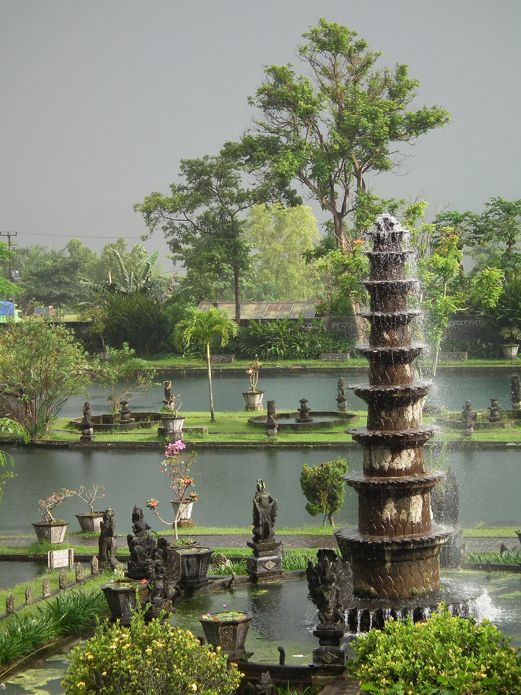

Tahu kapan hari suci, apa yang tutup, dan saran bagi wisatawan agar tidak kaget saat tiba di lokasi.
Pada Hari Nyepi, seluruh aktivitas di Bali berhenti selama 24 jam. Tidak ada penerbangan, tidak ada aktivitas di jalan, dan lampu harus redup. Wisatawan diharapkan tinggal di dalam akomodasi dan mematuhi aturan setempat.